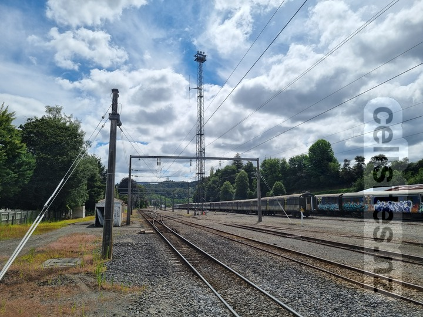

Vodafone Taumarunui

I believe the omni-directional antennas pictured above were previously used for Vodafone's GSM 900 services. However I am not 100% sure about this. It might actually just be antennas for railway communications. Anyone who can confirm either way are encouraged to email me. Vodafone now operates from a new site co-located with Spark.